Draven
Draven
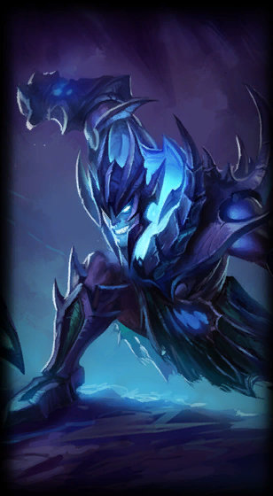
Soul Reaver Draven
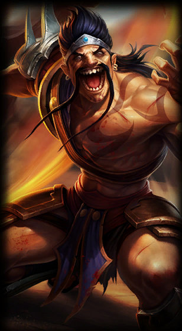
Gladiator Draven
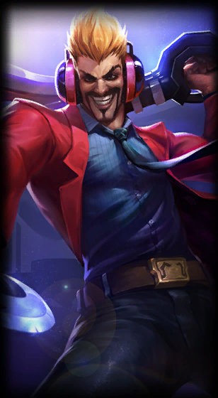
Primetime Draven
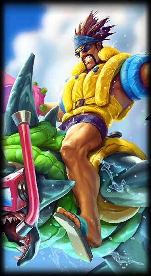
Pool Party Draven
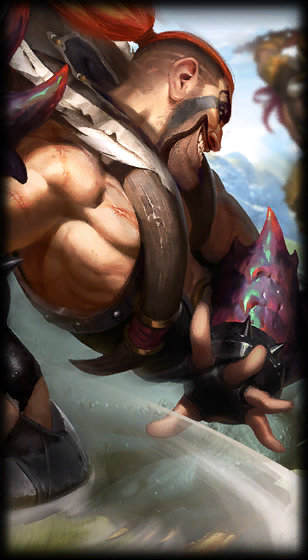
Beast Hunter Draven
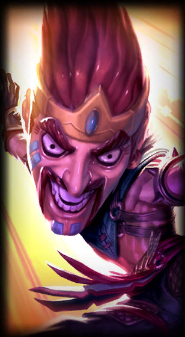
Draven Draven
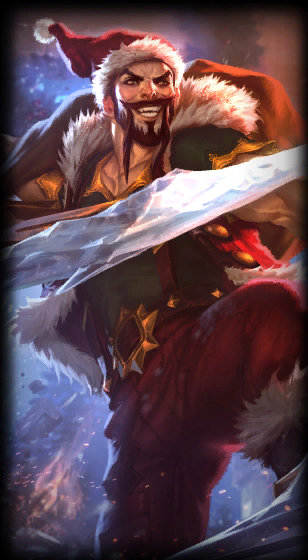
Santa Draven
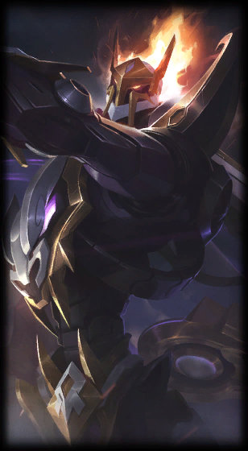
Mecha Kingdoms Draven
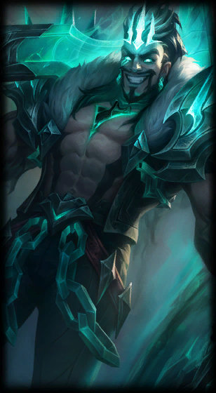
Ruined Draven
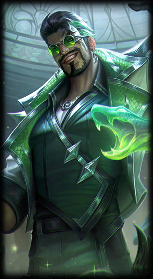
Debonair Draven
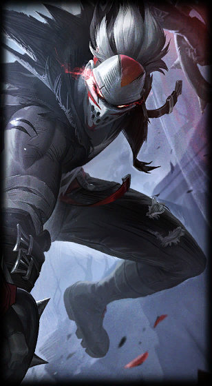
Fright Night Draven
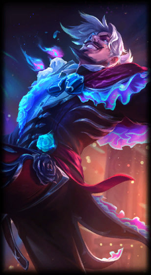
La Ilusin Draven
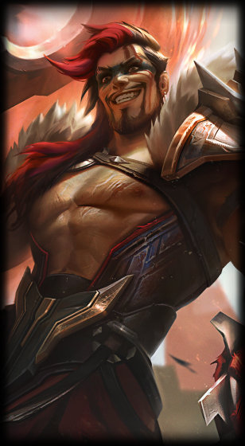
Grand Reckoning Draven
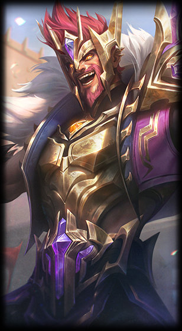
Victorious Draven
In Noxus, warriors known as Reckoners face one another in arenas where blood is spilled and strength tested—but none has ever been as celebrated as Draven. A former soldier, he found that the crowds uniquely appreciated his flair for the dramatic, and...